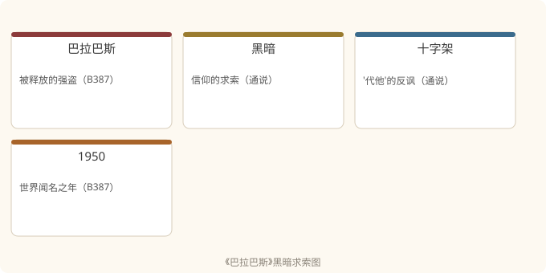

巴拉巴斯
一、基本信息
| 作者 | 帕尔·拉格克维斯特 |
|---|---|
| 成书/出版 | 1950年（Britannica B387：Barabbas (1950)——'With Barabbas (1950) he achieved world recognition'） Par Lagerkvist — Encyclopaedia Britannica（百科全书） |
| 国别/地区 | 瑞典 |
| 时代 | 近代 · 20世纪50年代初 |
| 体裁 | 长篇小说 |
| 语言 | 瑞典语 |

《巴拉巴斯》黑暗求索图（主题·结构图）
二、创作背景
Britannica（B387）：'With Barabbas (1950) he achieved world recognition'（由此世界闻名）。
Britannica（B387）：拉格克维斯特——1951诺奖。
题材（通说待核）：被释放的强盗巴拉巴斯——目睹基督之死后的黑暗求索。
三、内容脉络
（通说待核）巴拉巴斯被释放：'代他'而死者的追随。
（通说待核）黑暗中'信'与'不信'的摇摆。
四、主要人物表
| 人物 | 身份 | 说明 |
|---|---|---|
| 巴拉巴斯 | 被释放的强盗 | （B387 书名人物） |
五、主题与艺术特点
- '黑暗中'的信仰求索（通说待核）。
- '代他'的救赎反讽（书名语境——通说待核）。
- 一战的悲观底色（B387：Ångest 语系）。
六、影响与评论
- Britannica：'achieved world recognition'（B387）。
Par Lagerkvist — Encyclopaedia Britannica（百科全书） - Britannica：1951诺奖（B387 交叉）。
Par Lagerkvist — Encyclopaedia Britannica（百科全书）
七、阅读建议
难点
- 宗教寓意的解读。
- '强盗'视点的福音对照。
- 《巴拉巴斯》中译名（《巴拉巴》）待核。
- 瑞典文原版。
拉格克维斯特首选；与《侏儒》对读。
八、待核实
- 巴拉巴斯人名核对（B387书名）。
- 1950年出版细节待核。
- 1961年电影改编说待核（通说）。
本页主要来源
帕尔·拉格克维斯特的其他收录作品：巴拉巴斯